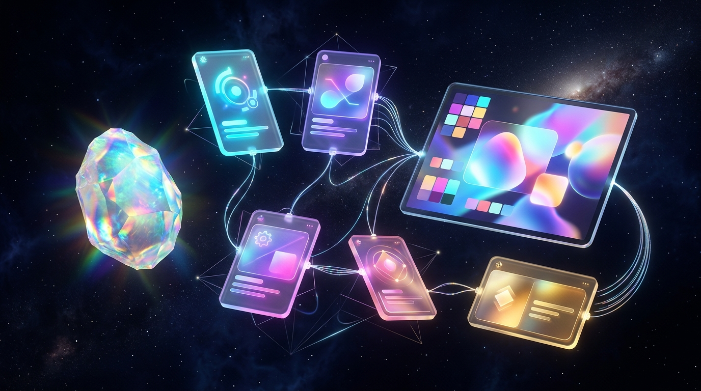
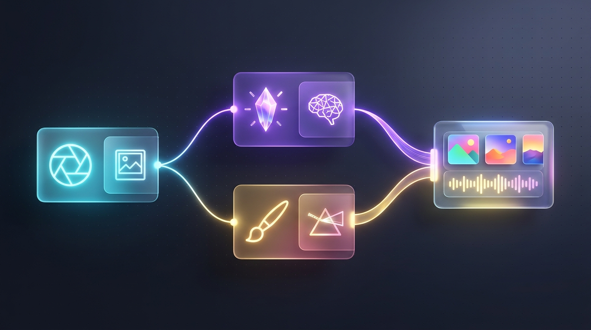
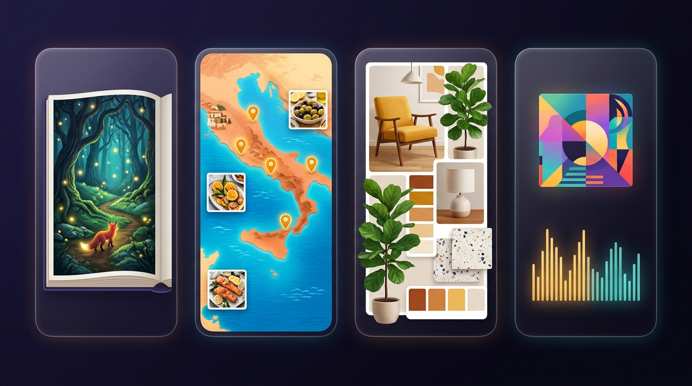

The complete visual handbook to Google's no-code AI mini-app studio—turning plain-English ideas into chained multimodal node workflows, styled web apps, and shareable creative tools.

Standard chat prompts crumble when a task needs five distinct stages—like researching a live URL, writing a script, painting four matching scenes, and formatting a clean webpage. Google Opal (opal.withgoogle.com / opal.google) lets anyone build reusable, shareable AI mini-apps visually without writing a single line of code.
@Variablesp. 6My Drive > Opal) and powers reusable custom workflows across the broader Gemini ecosystem—meaning every node-chaining habit in this guide pays dividends across your entire Google AI Ultra toolkit.
Opal bridges the gap between casual chat assistants and full software engineering: you get the structured power of multi-step pipelines with zero boilerplate, package installs, or cloud billing setup.
Sign in at opal.withgoogle.com with your Google AI Ultra account. Opal automatically creates an Opal folder in your Google Drive to save every app you build.
Pick a featured mini-app from the Gallery and click Remix to inspect its wiring—or click Create New and describe your dream tool in one sentence.
Toggle to the App Preview pane to test your form like a real user, refine any node prompt on the canvas, and click Publish to copy a shareable link.
| Google Tool | Core Format | Coding Required? | Best Use Case |
|---|---|---|---|
| Google Opal | Visual Node Workflow + Form Mini-App | Zero Code (Chat + Visual Cards) | Multi-step multimodal mini-apps chaining Search, Gemini, Imagen, Veo, and styled Webpage/Doc outputs you can share by link in minutes. |
| Gemini Gems | Custom Persona & Saved Instructions | Zero Code | Back-and-forth conversational coaching, writing partners, or Q&A grounded in uploaded reference files. |
| Google AI Studio | Developer Prompt & API Workbench | Low / API Code | Testing raw model parameters (temperature, JSON schemas, token counts, Live API) and exporting Python/TypeScript SDK snippets. |
| Google Antigravity | Agentic Full-Stack IDE | Agentic Code | Shipping custom production SaaS apps with databases, authentication, custom domains, Stripe billing, and full Git repos. |
@User Input chips into parallel Gemini and Imagen nodes teaches you best practices in 3 minutes flat.
Opal's superpower is bi-directional sync: ask the bottom chat bar to add a feature and watch new cards appear on the canvas—or click any card directly to fine-tune its prompt, model, and @Variables.
@ Prompt Editor: Click any node to pick its AI model/tool and type @ to inject dynamic outputs from earlier steps.Every Opal mini-app—from a two-step summarizer to a ten-node multimedia studio—is assembled from four foundational node families working together in sequence or in parallel.

| Node Category | Available Engines / Options | What It Does & Best Practical Tip |
|---|---|---|
| 1. User Input | Text box, Dropdown, Photo/Image upload, PDF/Doc/Audio file, URL | Builds the front-door form your users fill out. Add clear placeholder hints so users know exactly what to type or upload. |
| 2. Generate (Text & Logic) | Gemini Flash (fast) • Gemini Pro (deep reasoning & coding) | Plans, summarizes, writes scripts, formats structured tables, or writes custom interactive HTML layouts. Use Flash for speed, Pro for nuance. |
| 3. Generate (Visual & Video) | Imagen 4 • Nano Banana (image edit) • Veo (video clips) | Creates crisp illustrations, restyles uploaded user photos in context, or renders short cinematic MP4 motion clips inside your workflow. |
| 4. Generate (Voice & Music) | AudioLM / Speech TTS • Lyria (instrumental music) | Turns upstream story text into natural spoken narration or composes custom background soundtracks structured by genre and mood. |
| 5. Tools & Assets | Google Search • URL / YouTube Reader • Add Asset | Grounds steps in live web facts, extracts webpage/video content, or attaches permanent brand PDFs/style guides from Google Drive. |
| 6. Output | Dynamic Webpage • Google Docs / Sheets / Slides | Presents your finished text, galleries, and players in a styled UI—or exports structured reports straight into the user's Workspace. |
@Variable Chips
The magic of Opal happens when Step 2 automatically builds on Step 1's output—for example, letting Gemini write an ultra-detailed visual art prompt first, then feeding that exact prompt into Imagen 4 via an @ tag.
@ Dynamic References Work Inside Any Node
Inside any Generate or Output prompt box, press the @ key on your keyboard. Opal opens a live menu listing every upstream User Input, Asset, Tool, and completed Step—inserting a colored dynamic chip that updates automatically on every run.
Act as a senior editorial art director.
Read the product positioning in @Brand Summary and inspect the uploaded @Product Photo.
Use @Google Search to verify seasonal color trends for this category.
Write one vivid, photographic scene description placing the product in a sunlit lifestyle setting with natural props and 85mm depth of field.
Output ONLY the raw image-generation prompt (under 65 words), with zero intro commentary or bullet points.
Never cram research, copywriting, and formatting into one giant prompt. Split them into three focused nodes so each step succeeds reliably and is effortless to debug.
When Node A feeds Node B (like Gemini feeding Imagen or Lyria), end Node A with "Output ONLY the prompt text—no conversational filler" so clean text flows forward.
Rename generic labels like Generate 3 to clear titles like Competitor Table or Cover Art so your @ menu stays self-explanatory as graphs grow.
@User Input to expand their 3 words into a rich, structured brief—then feed that upgraded brief into Imagen, Veo, and Lyria so every output looks studio-crafted!
People who open your published Opal link never see your node graph unless they choose to remix it—they experience a sleek, standalone interactive web mini-app. A few thoughtful UX touches make your tool feel custom-coded.

Apps with 8 required boxes scare users off. Ask for 1–3 high-leverage inputs (e.g., Topic, Tone Dropdown, and optional Reference Image) and let Gemini infer the rest.
Choose Dynamic Webpage in your Output node and specify layout cues—such as "two-column magazine hero card, summary callout pills, and a downloadable checklist table."
Use Opal's Theme selector (or describe your palette in the Chat Builder, like "warm editorial cream with forest-green serif headers") to match your brand aesthetic.
Route only polished final @Variables into your Output card so intermediate JSON drafts, raw search snippets, and prompt-upgrader notes stay behind the curtain.
@User Input fields for your niche → add an @Asset brand guide → restyle the Output theme! You can transform a generic "Blog Writer" template into a specialized "Real Estate Listing + Virtual Staging App" in under five minutes.
Nothing kills mini-app magic faster than a 45-second loading spinner or one broken step derailing the final screen. Use Opal's Step Console and Parallel Fan-Out wiring to keep apps fast and resilient.
When your final webpage looks wrong, open the Console panel and click each step from left to right. You will spot the exact node where a hallucination or empty string started.
Tweaking your final layout prompt? Run just that downstream node in the Step Inspector using cached upstream values instead of re-generating every image and video from scratch.
Test your app with a 1-word input, a broken URL, and an unrelated selfie. Add a fallback line in Step 1: "If @User Input lacks detail, assume sensible creative defaults."
Use Gemini Flash for quick input cleanup, routing, and formatting; save heavier Gemini Pro reasoning solely for your core analytical or creative centerpiece node.
Paste any blueprint below into Opal's Conversational Chat Builder to auto-scaffold the graph, then customize the individual node prompts to fit your workflow.
| Mini-App Recipe | User Input Fields | Chained Node Graph (Middle Steps) | Styled Output View |
|---|---|---|---|
| 1. URL-to-Social Launch Kit | @Product URL + @Brand Tone dropdown |
Step 1 (URL Reader + Gemini): Extract key value props. Step 2A (Gemini): LinkedIn, X & IG posts. Step 2B (Imagen 4): 1:1 & 16:9 hero visuals. |
Tabbed campaign webpage with copy-paste post cards and downloadable visuals. |
| 2. Illustrated Storybook + Voiceover | @Child Name, @Hero Animal, @Lesson |
Step 1 (Gemini Pro): 4-page rhyming story + character visual sheet. Steps 2A–2D (Imagen 4): 4 watercolor spreads. Step 2E (AudioLM): Warm narrated audio. |
Interactive picture-book webpage with embedded audio player at the top. |
| 3. Live Competitor & Topic Brief | @Company / Topic + @Focus Question |
Step 1 (Google Search + Gemini): Pull recent news, pricing & launches. Step 2 (Gemini Pro): SWOT matrix + strategic takeaways. |
Executive dashboard page + one-click export to Google Docs. |
| 4. Room Photo Restyler & Shopper | @Room Photo upload + @Design Style |
Step 1 (Gemini Vision): Analyze room geometry & lighting. Step 2A (Nano Banana): Restyle photo preserving walls. Step 2B (Search): 5 matching decor categories. |
Before/After visual comparison card + curated shopping checklist. |
| 5. YouTube Hook & Thumbnail Lab | @Video Idea + optional @Host Selfie |
Step 1 (Gemini): 5 high-CTR titles + 20-second spoken cold open. Step 2 (Imagen 4 / Nano Banana): High-contrast 16:9 thumbnail concept. |
Creator pre-production sheet pairing each title next to the thumbnail preview. |
"Build a mini-app that takes a Topic and Audience Level as user inputs, uses Google Search to gather fresh 2026 facts, runs two parallel steps—one Gemini node writing a 5-bullet executive brief and one Imagen node creating an editorial header illustration—and displays both in a clean modern magazine webpage."
With traditional AI code projects, sharing a prototype with a colleague means wrestling with cloud hosting and leaked API keys. Opal handles identity, compute, and Google Drive file permissions natively.
Recipients sign in with their own Google account to run your published mini-app—meaning you never paste or risk billing keys inside client-facing tools.
Every Opal workflow lives inside My Drive > Opal. You can organize, back up, duplicate, or adjust sharing access just like a Google Doc or Sheet.
Share links let people run your app cleanly; if someone clicks Remix, Opal clones a separate copy into their Drive—your original graph is never overwritten!
| Task / Goal | How to Handle It Cleanly in Google Opal |
|---|---|
| Share with Specific Teammates or Clients | Click Publish / Share and restrict access to named Google accounts or your Workspace domain—ideal for internal team calculators, research briefs, and brand generators. |
| Publish a Public Community Tool | Enable link sharing for Anyone with the link so social followers, students, or newsletter readers can launch and run your mini-app in one click. |
| Experiment Without Breaking Your Live Link | Before making major node surgery on an app people actively use, duplicate the file inside My Drive > Opal (e.g., App_v2_Dev) so your live link stays rock-solid. |
| Port Workflows Into Gemini | Because Opal's custom workflow DNA integrates into the Gemini ecosystem, clean modular prompts and Drive assets carry smoothly into Gemini skills and Gems. |
Smart builders never spend two weeks coding a full-stack app before knowing if users care—or if the AI pipeline even works! Use Google Opal as your rapid product lab, then graduate proven winners into AI Studio and Google Antigravity.
16:9 reference frames in one click.Every Opal node maps 1-to-1 to an async API function in TypeScript or Python! Copy your tested node prompts, model choices, and parallel branching diagram straight into an Antigravity agent brief so it builds the exact architecture you already validated.
Watching five friends use your Opal link reveals every confusing form label and surprising upload before you write a single line of React—saving days of wasted frontend refactoring.
Keep this page handy whenever a workflow step misbehaves—every common Google Opal quirk has a reliable 10-second fix.
| Symptom / Quirk | Root Cause & 10-Second Fix |
|---|---|
| Downstream node ignores an earlier step's result | Missing or broken @Variable chip after deleting/replacing a card. Open the downstream node, delete the stale text, press @, and re-select the live upstream step. |
| Final Webpage displays raw "Sure! Here is..." chat fluff | Upstream node lacked an output contract. Append "Output ONLY the clean content with zero conversational intro or markdown fences" to the feeding Generate step. |
| Mini-app takes 40+ seconds to finish a single run | Media nodes wired in single-file daisy chain. Rewire independent Imagen, Veo, and Lyria steps in parallel off the same upstream brief, and swap helper steps to Gemini Flash. |
| Image node ignores the user's uploaded photo | Prompt didn't inject the upload chip or used text-only phrasing. Explicitly insert @User Photo inside the visual node prompt and choose an image-editing/reference model. |
| 2-word user inputs produce generic or broken outputs | Raw input fed straight into media generators. Insert a fast Gemini Flash "Prompt Upgrader" node right after @User Input to enrich sparse entries first. |
| Teammate opens shared link and sees "Access Denied" | App is still in draft or Drive sharing is private. Click Publish inside Opal and check permissions on the file in My Drive > Opal. |
| Live users see half-baked broken edits while I tinker | Editing production file directly. Duplicate your Opal file in Google Drive to test major graph experiments, then publish when verified. |
@Variable Chip lights up in the prompt box.@Assets before public sharing!https://opal.withgoogle.com, hit Remix on any Gallery favorite to peek under the hood, or describe a repetitive multi-step task in plain English and share your custom tool link in minutes!